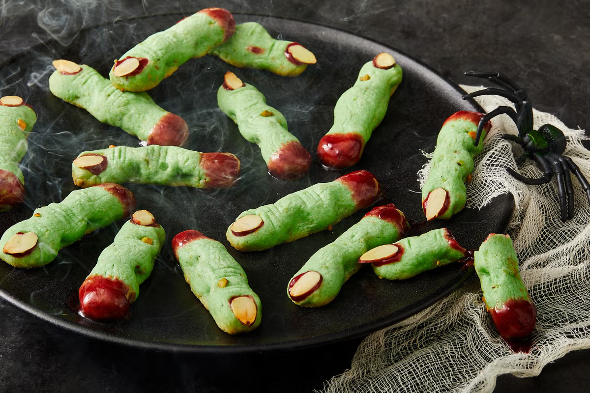

Zombie Finger Cookie Recipe

Description
It's getting closer to Halloween and time to start the party planning! This plate of gnarly zombie finger cookies are sure to be a smash.
This plate of cookies will simultaniously creep out your party attendees as well as make their toungues happy from how dilicious these finger foods are.
These delicious short bread cookies are died green for that rotten zombie flesh look and bit of cherry jam is added to the base for a nice gory touch.
Ingredients
- Green Food Coloring
- Unsalted Butter
- All-purpose Flour
- Confectioners' Sugar
- Almond Extract
- Vanilla Extract
- Pistachios
- Almonds
- Cherry Jam
Steps
- In a large bowl, whisk together the confectioners sugar and butter until it becomes pale and fluffy (~ 2 minutes).
- Add one egg to the bowl and beat until incorporated and fluffy.
- Add the almond and vanilla extract to the bowl, along with the green food coloring, and beat until everything is fully combined and green throughout.
- In a separate smaller bowl whisk together some flour and salt until fully incorporated.
- Slowly mix in the flour/salt mixture into the butter mixture.
- Fold in Pistachios throughout the mixture for texture.
- Cover bowl with plastic wrap and refrigerate for a minimum of 30 minutes and a maximum of 2 days.
- Line 2 rimeed baking sheets with parchment.
- Remove a quarter of the dough and portion into 12-13, 1 tbsp. balls.
- Roll each ball between your palms to form a finger shape.
- Arrange the finger shaped dough on the prepared sheet.
- Press an almond slicce into each cookie to represent a finger nail.
- Create a knuckle by pinching the dough carefully just below the almond sliver as well as halfway down the finger.
- Form knuckle grooves with a sharpe knife blade.
- Use pistachio pieces to create warts on the fingers.
- Repeat this with all the dough and the freeze for 30 minutes.
- Preheat oven to 375 degrees and bake for 7-9 minutes.
- Once cooled, gently lift of the almond fingernail and add a tiny dab of cherry jam to the finger. Then replace the almond finger nail for some gory detail!
Home